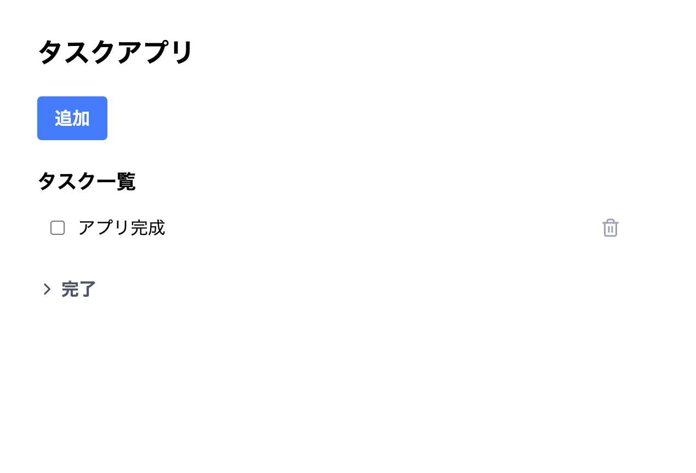
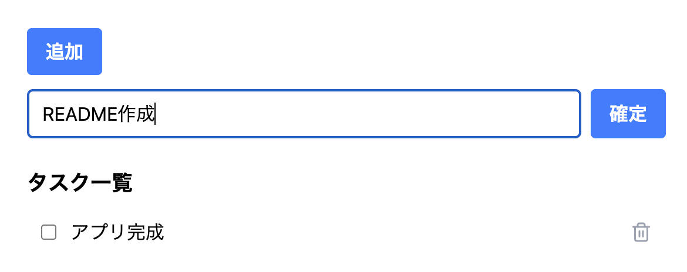
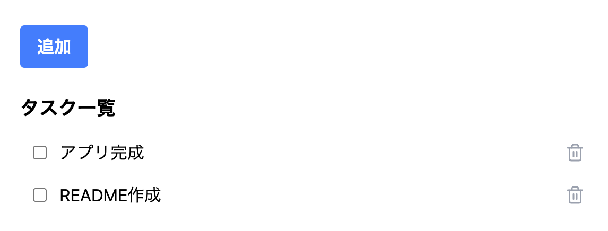
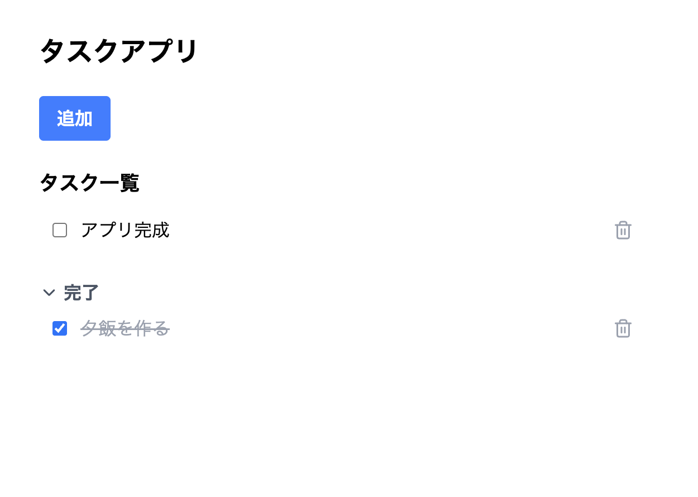
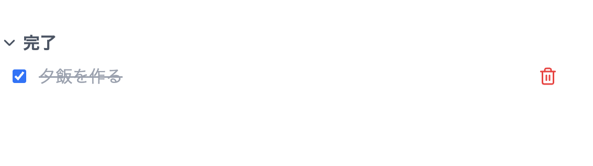

task-app
Todoの確認ができるWebアプリケーション
アプリについて
技術スタック
フロントエンド
React, TypeScript, Vite, Tailwind CSS, Storybook
バックエンド
Java 21, Spring Boot
PostgreSQL, Docker / Docker Compose
制作期間
3週間
Githubリンク
Githubリンクwebの画面全体
googleのTodoリストをリスペクトしたデザイン

機能
タスク作成
タスクを作成できます


タスク一覧表示
タスクを一覧表示しています
トグルを開くことで完了タスクの表示を切り替えます

タスク更新
チェックボックスをチェック/解除することでタスクのステータス変更を行うことができます
タスク削除
タスクの削除ができます

制作の経緯
- 制作理由 -
すでに何度か利用しているSpring Bootの理解と、新しく学んだTypeScript React Dockerを組み合わせ、 DB バックエンド フロントエンドを網羅するアプリを作成しました。
- 制作の流れ -
設計：DB設計・画面設計・API設計
DB構築：PostgreSQLでコンテナ化・tasksテーブル作成
バックエンド：Spring Bootを用い、タスク管理REST APIの構築
フロントエンド：Vite + Reactのコンポーネント駆動開発
- 工夫した点 -
DBサーバーはDocker Composerを使用してコンテナ化しました。
フロントエンドでは、コンポーネントを独立して開発・確認できるようStorybookを導入しました。
また、API通信・状態管理を useTasks カスタムフックにまとめ、コンポーネントはUIの表示に専念できる設計にしました。
セキュリティへの配慮として、DBの認証情報を環境変数で管理しソースコードに直接記載しない設計にしました。
感想
開発を通じ、API設計やTypeScript React Docker SpringBootへの理解が深まりました。
JavaとTypeScript(JavaScript)との違いや共通点を実際のコードを通して発見する瞬間が特に楽しかったです。
ゴミ箱機能(論理削除)の追加実装なども今後挑戦したいと考えています。